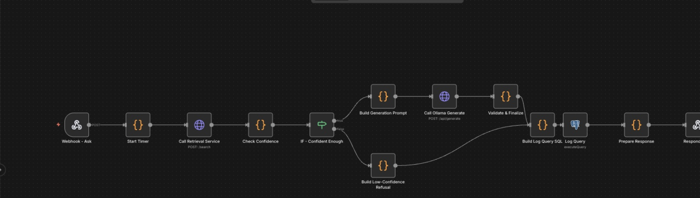
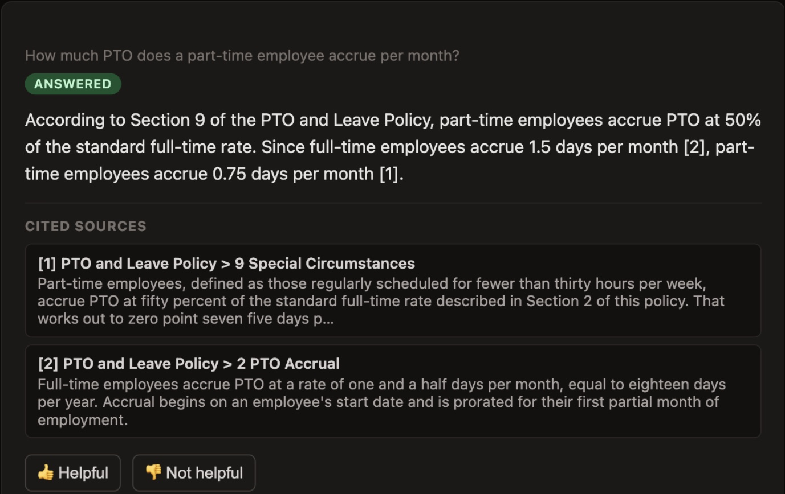
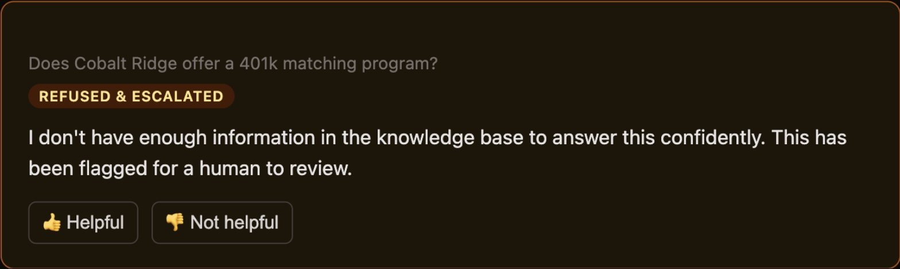

Knowledge retrieval, with a measured refusal gate
A wrong answer costs more than no answer. This system cites the exact chunk behind every claim it makes, and refuses instead of guessing when the evidence isn't there, 100% of the time on out-of-corpus questions across a 50-question eval. Not a demo that shows the good answer and hides the rest. Measured.
The problem: a wrong answer costs more than no answer
What actually blocks this project.
A support team working from internal policy and procedure documents needs answers fast, but the documents themselves, refund limits, retention periods, security procedures, are exactly the kind of data a compliance team won't let near a third-party AI API. That rules out most off-the-shelf AI assistants before the first demo.
Even a fully local model doesn't solve the harder problem: a fluent, well-formatted, wrong answer is worse than no answer at all. One misquoted refund limit repeated to a customer, one invented policy number in an audit trail, and the tool that was supposed to save time now costs more to clean up. Most retrieval demos never measure this. They show 1 good answer and never say what happens on the other 49.
What I built: retrieval you can point to, and a gate that means it
The system that replaced guessing.
A self-hosted retrieval pipeline that combines keyword search and vector search over your own documents, reranks the results, and generates an answer that's prompted to cite the exact chunk behind every claim. When retrieval confidence is low, or the model can't produce a properly cited answer, the system refuses and escalates instead of guessing, and every query is logged. 50 real test questions, 40 answerable and 10 not, run against the live stack through a real eval harness. The numbers below are what that harness actually returned, not the ones that made the demo look good.
How it works: four stages, one hard branch
The pipeline every question moves through.
Every question moves through the same four stages. Two independent checks, not one, decide whether an answer ever reaches the person asking.
PDF, DOCX, and Markdown are split on heading boundaries, not fixed byte counts, and every chunk carries its section breadcrumb so a lone sentence isn't stripped of context.
Keyword search catches exact terms embeddings miss, a policy number, a form name; vector search catches paraphrases. Both run, fused by rank, not by a hand-tuned weight.
A cross-encoder reranks the fused candidates for relevance, then a local model is prompted to answer only from what's in front of it, every claim ending in a citation.
Low retrieval confidence, or an answer with no valid citation, routes to a fixed escalation message. Nothing else in the system can produce a best-guess answer.


How failures are handled: refusal is a feature, not a bug
What happens when the evidence isn't there.
The model is allowed to not know something. It is never allowed to sound confident about it.
- Nothing relevant retrieved
- If the best reranked match scores below a threshold, the system refuses immediately and never calls the generation model at all. This is what catches genuinely out-of-corpus questions.
- Related, but not an answer
- Retrieval can return chunks that are topically related without stating the specific fact asked. The model is prompted to say so explicitly rather than fill the gap with an inference.
- An answer with no real citation
- The workflow checks that every citation marker in the output actually resolves to a chunk it was shown. An answer that fails this check is discarded and escalated, never shown uncited.
- Two documents that disagree
- The corpus deliberately includes two policies that state different numbers for the same thing. The model is prompted to surface the disagreement and cite both, not silently pick one.

The result
Real numbers, from the live stack.
Most retrieval-augmented demos assume the retrieval works and never check. This one ships with a 40-question golden set and 10 out-of-corpus questions, run against the actual running stack, not mocked. On 10 questions with no answer anywhere in the corpus, absent topics, near-misses, false premises, it never guessed once:
The number that costs something is the 10% false refusal rate: a locally-run model, held to a hard citation format, occasionally declines a question it could have answered. A system that refuses everything scores 100% on the first number for free. Reporting the honest cost right next to it, instead of hiding it, is the entire point of running the eval at all.
That's the trade a support team is actually weighing: a 0% chance of a confidently wrong answer reaching a customer, against a model that says "I don't know, ask a person" on 1 in 10 answerable questions. Most teams take that trade the moment they see what a wrong answer already costs them.
Stop guessing what your documents say
A wrong answer costs more than the question did.
The workflow, the retrieval service, and the eval harness are all in the public repository, runnable end to end with Docker Compose, along with 15 synthetic policy documents and the full eval report with real numbers.
Sitting on policy or procedure documents your team can't send to a third-party AI, and can't afford to get a wrong answer from either? Bring me those documents. In 20 minutes we'll map what this looks like built around your infrastructure, your data, your numbers instead of mine.
Prefer email? hello (at) prudie.dev